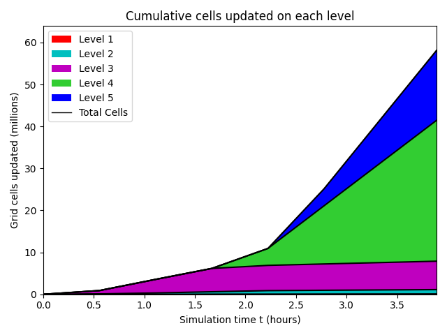
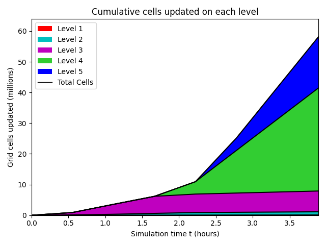
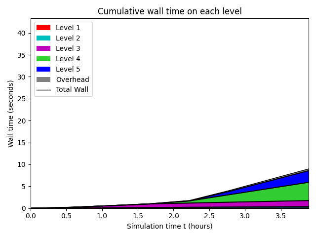
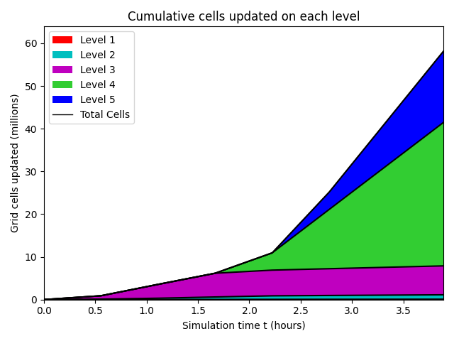
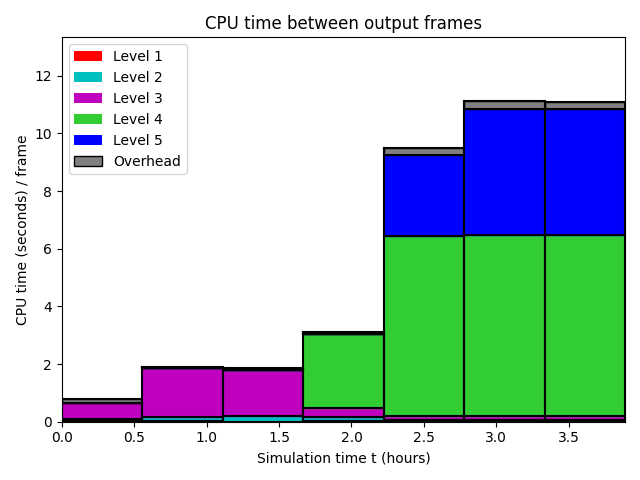
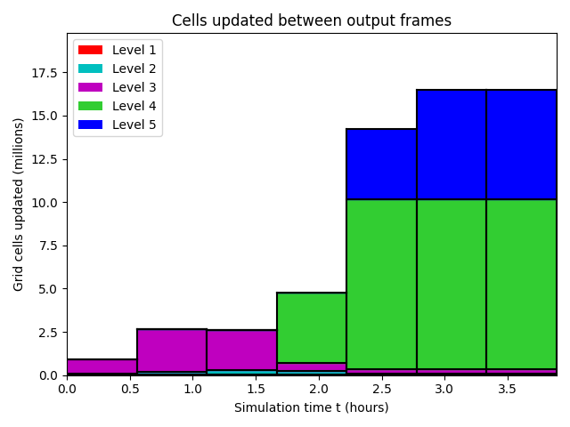
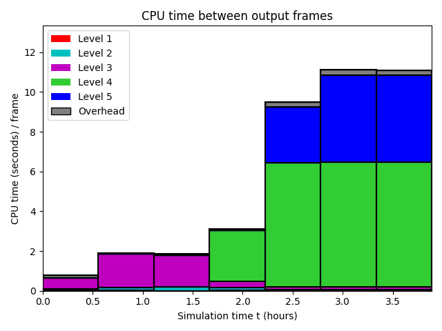
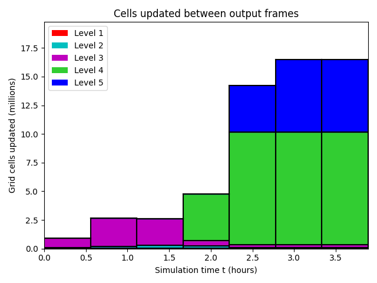
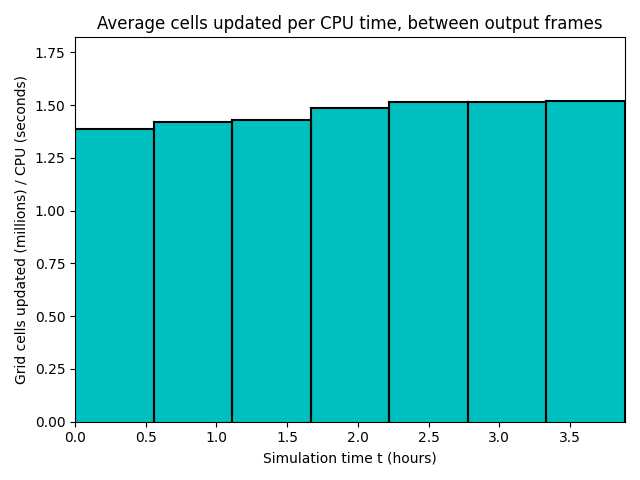

Datetime: 2020-04-18 16:05 From: /Users/rjl/clawpack_src/clawpack_master/geoclaw/examples/tsunami/radial-ocean-island-fgmax/_output
============================== Timing Data ==============================
Integration Time (stepgrid + BC + overhead)
Level Wall Time (seconds) CPU Time (seconds) Total Cell Updates
1 0.082 0.085 0.912E+05
2 0.539 1.242 0.104E+07
3 3.021 8.532 0.677E+07
4 11.084 39.608 0.336E+08
5 5.681 20.495 0.155E+08
total 20.406 69.962 0.569E+08
All levels:
stepgrid 19.841 68.538
BC/ghost cells 0.513 1.354
Regridding 0.636 1.654
Output (valout) 0.018 0.018
Total time: 21.354 72.049
Using 4 thread(s)
Note: The CPU times are summed over all threads.
Total time includes more than the subroutines listed above
Note: timings are also recorded for each output step
in the file timing.csv.
clock_rate = 1000000000 per second, count_max = 9223372036854775807
clock_start = 1587251128833707000, clock_finish = 1587251150243199000
=========================================================================


 



